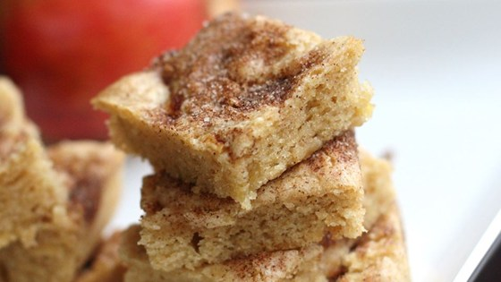

Prep
25 m
Cook
30 m
Ready In
55 m
Preheat oven to 350 degrees F (175 degrees C). Grease a 9x9 inch pan. Sift together flour, baking powder, salt, and 1/4 teaspoon of cinnamon; set aside.
In a large bowl, mix together melted butter, brown sugar, and 1/2 cup of white sugar with a wooden spoon until smooth. Stir in the egg and vanilla. Blend in the flour mixture until just combined, then stir in the apples and walnuts. Spread the mixture evenly into the prepared pan. In a cup or small bowl, stir together the remaining cinnamon and sugar; sprinkle over the top of the bars.
Bake for 25 to 30 minutes in preheated oven; finished bars should spring back when lightly touched. Cool in the pan, and cut into squares./p>
